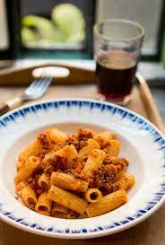

Pasta Bolognese

Description
This pasta bolognese is delicious and easy to make. The adding of carrots gives this dish
a unique taste compared to traditional bolognese recipes.
The key to this bolognese is to allow it to simmer for as long as you can. The longer it simmers,
the richer the taste will be. You can add parmesan when serbing for taste if you like, although it
is not essential.
Ingredients
- 800g Beef Mince
- 1 Onion
- 1tsp Worcester sauce
- 2 large carrots
- 2 beef stock cubes
- 800g chopped tinned tomatos
- 6 cloves of garlic
- 1 tsp Thyme
- 1 tsp Oregano
- 3 tsp Olive Oil
Steps
- Finely chop onion and carrot
- Grate garlic
- Heat oil in large pan on medium/high heat
- Add garlic, onion and carrot to the pan and simmer for around 4 minutes
- Add the minced beef and stir until all meat is browned
- Add the rest of the ingreients and bring to the boil
- Place lid on pan and simmer on lowest setting until ready to serve